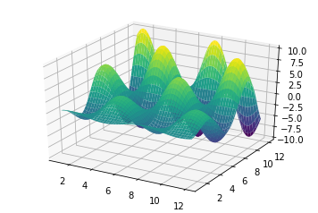

scikit-笔记01:python 中的科学计算工具
Table of Contents
1 Jupyter Notebooks
You can run a cell by pressing [shift] + [Enter] or by pressing the "play" button in the menu.
You can get help on a function or object by pressing [shift] + [tab] after the opening parenthesis function.
You can also get help by executing function?
2 Numpy Arrays
Manipulating numpy arrays is an important part of doing machine learning (or, really, any type of scientific computation) in python. This will likely be a short review for most. In any case, let's quickly go through some of the most important features.
import numpy as np # Setting a random seed for reproducibility rnd = np.random.RandomState(seed=123) # Generating a random array X = rnd.uniform(low=0.0, high=1.0, size=(3, 5)) # a 3 x 5 array print(X)
(Note that NumPy arrays use 0-indexing just like other data structures in Python.)
# Accessing elements # get a single element # (here: an element in the first row and column) print(X[0, 0]) # get a row # (here: 2nd row) print(X[1]) # get a column # (here: 2nd column) print(X[:, 1]) # Transposing an array print(X.T)
# Creating a row vector # of evenly spaced numbers over a specified interval. y = np.linspace(0, 12, 5) print(y) # Turning the row vector into a column vector print(y[:, np.newaxis])
# Generating a random array rnd = np.random.RandomState(seed=123) X = rnd.uniform(low=0.0, high=1.0, size=(3, 5)) # a 3 x 5 array # Getting the shape or reshaping an array print(X.shape) print(X.reshape(5, 3)) # Indexing by an array of integers (fancy indexing) indices = np.array([3, 1, 0]) print(indices) X[:, indices]
array([[ 0.55131477, 0.28613933, 0.69646919], [ 0.4809319 , 0.9807642 , 0.42310646], [ 0.0596779 , 0.72904971, 0.34317802]])
There is much, much more to know, but these few operations are fundamental to what we'll do during this tutorial.
3 SciPy Sparse Matrices
3.1 csr_matrix
We won't make very much use of these in this tutorial, but sparse matrices are very nice in some situations. In some machine learning tasks, especially those associated with textual analysis, the data may be mostly zeros. Storing all these zeros is very inefficient, and representing in a way that only contains the "non-zero" values can be much more efficient. We can create and manipulate sparse matrices as follows:
from scipy import sparse # Create a random array with a lot of zeros rnd = np.random.RandomState(seed=123) X = rnd.uniform(low=0.0, high=1.0, size=(10, 5)) print(X) # set the majority of elements to zero X[X < 0.7] = 0 print(X) # turn X into a CSR (Compressed-Sparse-Row) matrix X_csr = sparse.csr_matrix(X) print(X_csr) # Converting the sparse matrix to a dense array print(X_csr.toarray())
3.2 lil_matrix
(You may have stumbled upon an alternative method for converting sparse to dense
representations: numpy.todense; toarray returns a NumPy array, whereas
todense returns a NumPy matrix. In this tutorial, we will be working with
NumPy arrays, not matrices; the latter are not supported by scikit-learn.)
The CSR: sparse.csr_matrix() representation can be very efficient for
computations, but it is not as good for adding elements. For that, the LIL:
sparse.lil_matrix()) (List-In-List) representation is better:
# Create an empty LIL matrix and add some items X_lil = sparse.lil_matrix((5, 5)) for i, j in np.random.randint(0, 5, (15, 2)): X_lil[i, j] = i + j print(X_lil) print(type(X_lil)) X_dense = X_lil.toarray() print(X_dense) print(type(X_dense))
3.3 lil_matrix vs. csr_matrix
. *csr_matrix good for computation bad for modify itself* . . ndarray --------------------------> csr_matrix ---------> ndarray . ~scipy.sparse.csr_matrix(ndarray)~ | ^ ~X_csr.toarray~ ==> ndarray . | | ~X_csr.todense~ ==> ndmatrix(not supported in scipy) . | | . | | . ~.tolil~ | | ~.tocsr~ . | | . V | . ndarray --------------------------> lil_matrix ---------> ndarray . ~scipy.sparse.lil_matrix(ndarray)~ ~X_lil.toarray~ ==> ndarray . . *lil_matrix bad for computation good for modify itself* . . >>>> but you can get both advantages(modify and compute), by convert to each other <<<<
Often, once an LIL matrix is created, it is useful to convert it to a CSR format (many scikit-learn algorithms require CSR or CSC format)
X_csr = X_lil.tocsr() print(X_csr) print(type(X_csr)) X_lil2 = X_csr.tolil() print(X_lil) print(type(X_lil))
3.4 other kinds of sparse matrix
The available sparse formats that can be useful for various problems are:
| type | description |
|---|---|
| CSR | (compressed sparse row) |
| CSC | (compressed sparse column) |
| BSR | (block sparse row) |
| COO | (coordinate) |
| DIA | (diagonal) |
| DOK | (dictionary of keys) |
| LIL | (list in list) |
The scipy.sparse submodule also has a lot of functions for sparse matrices
including linear algebra, sparse solvers, graph algorithms, and much more.
4 matplotlib
Another important part of machine learning is the visualization of data. The most common tool for this in Python is matplotlib. It is an extremely flexible package, and we will go over some basics here.
Since we are using Jupyter notebooks, let us use one of IPython's convenient built-in "magic functions", the "matoplotlib inline" mode, which will draw the plots directly inside the notebook.
%matplotlib inline
import matplotlib.pyplot as plt import numpy as np # Plotting a line x = np.linspace(0, 10, 100) plt.plot(x, np.sin(x)); # Scatter-plot points x = np.random.normal(size=500) y = np.random.normal(size=500) plt.scatter(x, y); # Showing images using imshow # - note that origin is at the top-left by default! x = np.linspace(1, 12, 100) y = x[:, np.newaxis] im = y * np.sin(x) * np.cos(y) print(im.shape) plt.imshow(im); # Contour plots # - note that origin here is at the bottom-left by default! plt.contour(im); # 3D plotting from mpl_toolkits.mplot3d import Axes3D ax = plt.axes(projection='3d') xgrid, ygrid = np.meshgrid(x, y.ravel()) ax.plot_surface(xgrid, ygrid, im, cmap=plt.cm.viridis, cstride=2, rstride=2, linewidth=0); plt.show()

There are many, many more plot types available. One useful way to explore these is by looking at the matplotlib gallery.
You can test these examples out easily in the notebook: simply copy the Source
Code link on each page, and put it in a notebook using the %load magic. For
example:
%load http://matplotlib.org/mpl_examples/pylab_examples/ellipse_collection.py
4.1 3 methods frequently used to create array
- np.random.<distribution>(args, size=)
- np.random.RandomState(seed=).<distribution>(args, size=)
- np.random.randint(lower, upper, size=)
5 Misc tools
5.1 Numpy
5.1.1 np.random.RandomState(seed=Num)
The target of RandomState is to build an shape-specifed ndarray according to
specified-distribution.
rds = numpy.random.RandomState(seed=<num>) will return you a rds = <class
'mtrand.RandomState'> object, who is the last step to collect samples from
certain distribution: samples = rds.<distribution>(mean,std,size)
. The target of ~RandomState~ is to build an *shape-specifed* ndarray . according to *specified-distribution*. . . . module rds obj . ----- random -----> RandomState --------> [specified distribution] -----> *ndarray* . ^ . normal(0, 10, size=(2,4)) | . ^^^^^^^^^^---------+ specify the shape of . uniform ndarray . . lognorm . . etc .
import numpy as np rds = np.random.RandomState(seed=234) print (type(np.random)) rds.uniform(0, 10, size=(3,5))
array([[ 0.30967343, 2.54282073, 9.12400444, 9.70174198, 2.46619776], [ 6.98807414, 8.66429319, 6.39521847, 4.56843648, 4.98794752], [ 7.20475007, 2.7125319 , 8.00619031, 5.09252675, 8.19921021]])
5.1.2 3 methods frequently used to create array
- np.random.<distribution>(args, size=)
- np.random.RandomState(seed=).<distribution>(args, size=)
- np.random.randint(lower, upper, size=)
5.1.3 add or delete an axis
... and np.newaxis ENTER!
5.1.4 ...
... = :,:,...,: means I don't care it, I prefer to keep all.
x[..., 12] means the I ONLY keep the 12th (start from 0) column elements
of last diemension of the array x
shape = (2,3,1) means:
. shape = (2, 3, 1) . out-side row, inside-row, column . . shape = (4, 2, 3, 1) . out-side^2 row, out-side row, inside-row, column .
x = np.array([[[1],[2],[3]],[[4],[5],[6]]]) y = np.arange(0, 15, 1).reshape((3, 5)) print (y[...,1].shape) print (x.shape) print (x) print("x[0,...]---------") print(x[0,...]) print(x[0,:,:]) print("x[1,...]---------") print(x[1,...]) print(x[1,:,:]) print("x[...,0]---------") print(x[...,0]) print(x[:,:,0])
So, by this way we can reduce the '[]' by index the certain axis items, and with other axes all be kept:
. [[ 0 1 2 3 4] . y = [ 5 6 7 8 9] . [10 11 12 13 14]] . ^ . | . | y's shape = (3,5) . | . . y[...,1] = [1, 6, 11] y[...,1].shape = (3,) . . . *we can use same manner to reduce the dimension of an array* . . [[[1] . [2] . x = [3]] . [[4] . [5] . [6]]] . ^ . +----+ . | . x[...,0] = [[1 2 3] . [4 5 6]] . [[1 2 3] . [4 5 6]] .
5.1.5 np.newaxis
Very flexible to new a axis, and modify the shape of array
x = np.arange(0,15,1).reshape((3,5)) print (x) print (x.shape) #<- (3,5) y = x[:,np.newaxis,:] print (y) print (y.shape) #<- (3,1,5) z1 = x[1,np.newaxis,:] print (z1) print (z1.shape) #<- (1,5) z2 = x[1:2,np.newaxis,:] print (z2) print (z2.shape) #<- (1,1,5)
Actually, we can also add new axis by reshape
x = np.arange(0, 15, 1) print (x.shape) print (x) y = x.reshape((15,1)) print (y.shape) print (y)
5.1.6 ndarray.ravel()
Used to flattern the ndarray. It is equivalent to reshape(-1, order=order).
>>> x = np.array([[1, 2, 3], [4, 5, 6]]) >>> print(np.ravel(x)) [1 2 3 4 5 6] >>> print(x.reshape(-1)) [1 2 3 4 5 6] >>> print(np.ravel(x, order='F')) [1 4 2 5 3 6]